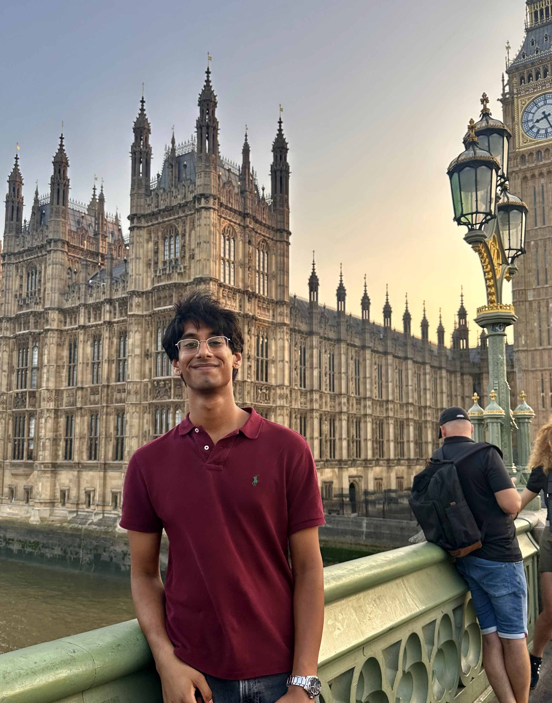
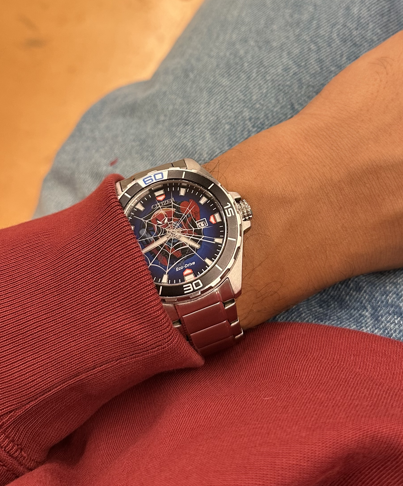
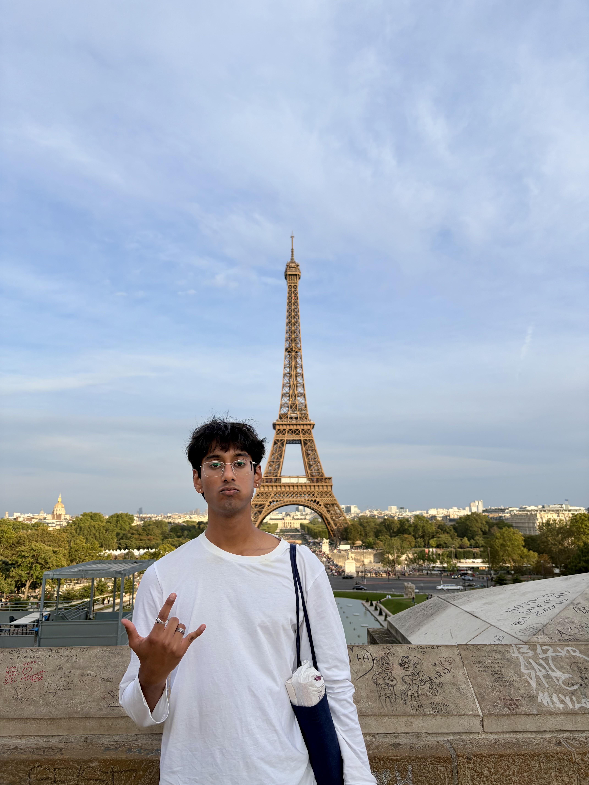

École Polytechnique
Summer 2026 internship! Working on inference-time optimization and distillation for text-to-image models with Prof. Xi Wang.

Hi, I’m Adit!
I’m an undergraduate studying EECS at UC Berkeley. I really like Spider-Man, birds, and coffee, and I'm currently learning to DJ & produce electronic music.
I enjoy thinking about how complex audiovisual processing systems learn representations of the world. As a result, I'm super excited about topics in neuroscience, machine learning, signal processing, and interpretability!
More things I enjoy: Spider-Man and the Marvel Universe, music (making, listening, and talking about it), playing volleyball, long walks, Star Wars, video games, impressionist art, and watches. The list goes on!
At school, I'm part of Launchpad, where I work on creative machine learning projects, and Golden Records, where I help organize crazy lit awesome shows with local musicians. I'm also an advisor at Health Engine, an accelerator for early-stage healthtech startups.


Summer 2026 internship! Working on inference-time optimization and distillation for text-to-image models with Prof. Xi Wang.
Researching the complexity of animal vocalizations using information-theoretic methods with Dr. Kris Bouchard.
Summer 2025 internship! Researched the speech habits of ALS patients and automated testing for a patient monitoring platform.